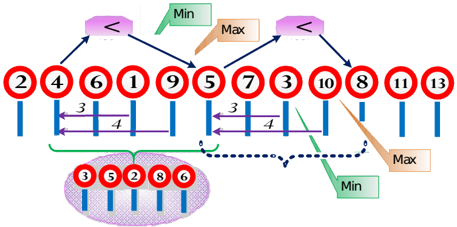

Hưởng ứng phong trào vận động toàn dân nghiêm chỉnh chấp hành luật lệ giao thông Bộ Văn hóa và Thể thao tổ chức một cuộc đua xe đường trường với khẩu hiệu “Vì sự an toàn của bạn và của mọi người, không vượt quá tốc độ cho phép”. Trên đường đua từ điểm xuất phát đến điểm đích Ban tổ chức cắm lần lượt n biển hạn chế tốc độ. Các biển được đánh số từ 1 đến n. Trên biển thứ i có ghi tốc độ vi (i = 1, 2, ..., n) tối đa cho phép và có gắn camera tự động ghi nhận các xe vượt quá tốc độ khi đi qua. Không có hai biển hạn chế tốc độ nào cắm cùng một chỗ và không có hai biển nào có giá trị tốc độ hạn chế giống nhau. Dãy giá trị tốc độ hạn chế v1, v2, ..., vn trên các biển của đường đua chỉ được công bố trước cuộc thi. Thắng cuộc là người phạm lỗi ít nhất và về đích đầu tiên.

Quyết tâm giành thứ bậc cao trong cuộc thi, đội đua của hãng taxi Miền Tây đã tổ chức một đường luyện tập trên đó có cắm m biển hạn chế tốc độ theo quy tắc như với đường đua chính thức. Các biển này được đánh số từ 1 đến m và trên biển thứ j ghi tốc độ giới hạn uj (j = 1, 2, ...,m). Nếu cách tổ chức đoạn đường luyện tập càng gần với đường đua chính thức bao nhiêu thì khả năng giành chiến thắng của đội càng lớn bấy nhiêu. Khi số liệu về đường đua chính thức được công bố Ban huấn luyện của đội đua hãng taxi Miền Tây muốn đánh giá xem đường luyện tập của mình giống đường đua chính thức đến mức nào bằng cách tính xem trên đoạn đường đua chính thức có bao nhiêu đoạn đường đua cùng dạng với đường luyện tập. Một đoạn đường đua chứa m biển hạn chế tốc độ trên đường đua chính thức được gọi là có cùng dạng với đường luyện tập nếu:
• Biển ghi tốc độ nhỏ nhất và biển ghi tốc độ lớn nhất trên nó ở cùng một vị trí tính từ đầu đoạn như trong đường đua luyện tập;
• Hiệu hai giá trị của biển đầu tiên và biển cuối cùng trên nó cùng dấu với hiệu hai giá trị của
biển đầu tiên và biển cuối cùng trong đường luyện tập.
Hai đoạn của đường đua chính thức gọi là khác nhau nếu biển đầu tiên trong chúng là khác nhau.
Ví dụ: Đường đua chính thức có n = 12 biển hạn chế tốc độ và các giá trị ghi trên biển lần lượt là (2, 4, 6, 1, 9, 5, 7, 3, 10, 8, 11, 13). Đoạn đường luyện tập có m = 5 biển hạn chế tốc độ và các giá trị ghi trên biển lần lượt là (3, 5, 2, 8, 6).Có 2 đoạn đường trên đường đua chính thức (bắt đầu từ biển số 2 và bắt đầu từ biển số 6) cùng dạng với đường đua tập.
Yêu cầu: Cho n, m, các giá trị uj (j = 1, 2, ...,m)và vi (i = 1, 2, ..., n). Hãy xác định số lượng đoạn đường đua chính thức khác nhau cùng dạng với đường luyện tập.
Dữ liệu nhập:
- Dòng đầu tiên chứa 2 số nguyên n và m (2 ≤ m ≤ n ≤ 106)
- Dòng thứ 2 chứa m số nguyên u1, u2, . . ., um (0 < uj ≤ 109, j = 1, 2, ...,m)
- Dòng thứ 3 chứa n số nguyên v1, v2, . . ., vn (0 < vi ≤ 109, i = 1, 2, ..., n).
Các số trên một dòng cách nhau một dấu cách.
Dữ liệu xuất:
- Là một số nguyên – số lượng đoạn đường đua chính thức khác nhau cùng dạng với đường luyện tập.